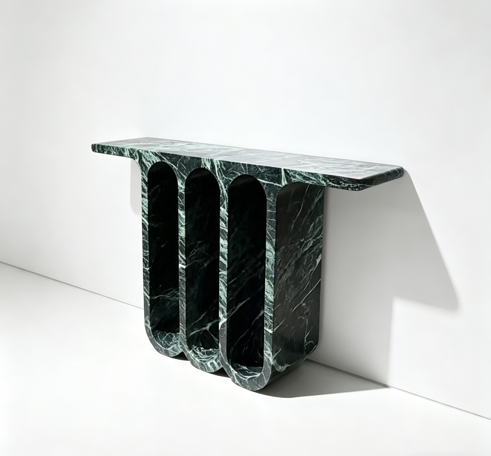

Back to products
MaterialNatural green marble or similar selected luxury stone
FinishPolished, honed, leathered, or sealed finish
MOQ1 piece for sample or custom project
Lead Time25-45 days after drawing and slab confirmation
Custom Green Marble Console Table
Luxury Green Marble Entrance Hall Table for Villas, Showrooms, and Designer Interiors
A sculptural green marble entrance hall table designed for villas, designer interiors, showrooms, and high-end hospitality spaces.
Send your target size, quantity, finish, and reference photo or drawing for factory review.
Product Overview
Built around your drawing, material, and market requirement.
This green marble entrance hall table is developed for buyers who need a statement stone furniture piece with repeatable production support. Before production, we can confirm tabletop length, width, height, edge profile, base structure, stone tone, veining direction, finish, and export packing to match your interior concept or project specification.
MaterialNatural green marble or similar selected luxury stone
UsageEntrance halls, villas, showrooms, boutique hotels, designer interiors
FinishPolished, honed, leathered, or sealed finish
MOQ1 piece for sample or custom project
Lead Time25-45 days after drawing and slab confirmation
Applications
Where buyers typically use this product.
Use these directions to match the product to your collection, project type, or target market before requesting a quote.
Custom Options
Tell us what you need to change before production starts.
Most buyers confirm size, finish, structure, and packing first. Use this section to identify the details you want quoted or adjusted.
- Custom tabletop length, width, height, and overall proportion
- Green marble or similar luxury stone selection based on tone and veining direction
- Straight, eased, bevelled, rounded, or drawing-based edge detail
- Block base, pedestal base, or drawing-based support structure
- Protective export packing with foam support and reinforced wooden crates
Buyer Questions
Common questions before ordering custom stone products.
These are the questions buyers usually ask before moving from reference stage to quote confirmation and production review.
Can the entrance hall table size be customized?
Yes. We can customize the length, width, height, tabletop thickness, and base proportion according to your drawing, reference image, or interior layout.
Can I confirm the green marble slab before production?
Yes. We can share slab or block photos and videos before cutting so you can confirm the color tone and veining direction.
Is this stone console table suitable for export orders?
Yes. We prepare protective inner packing and reinforced export wooden crates for international delivery of heavy stone furniture.